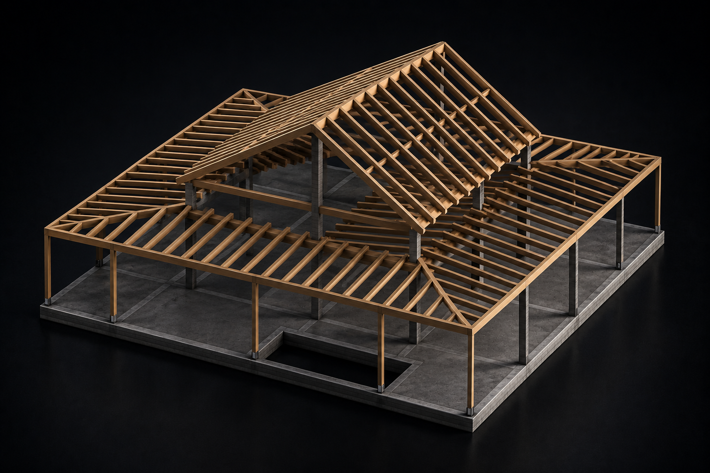
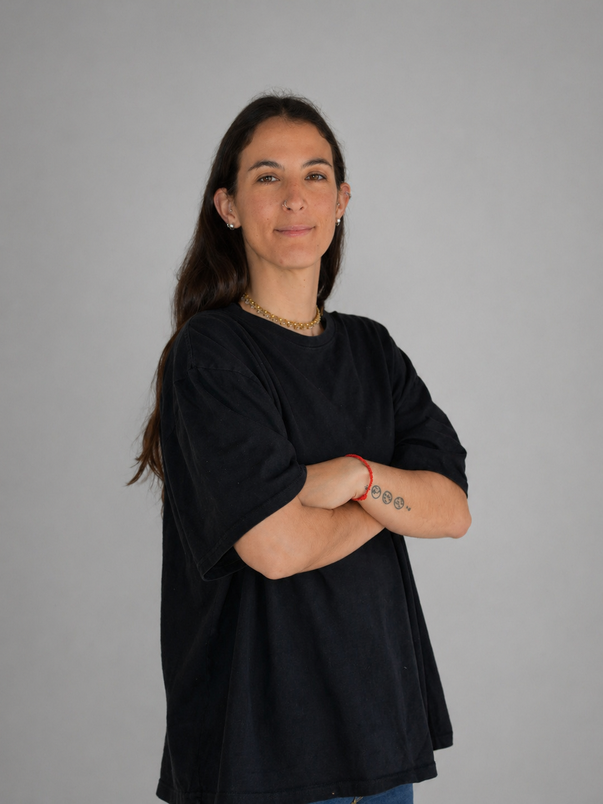
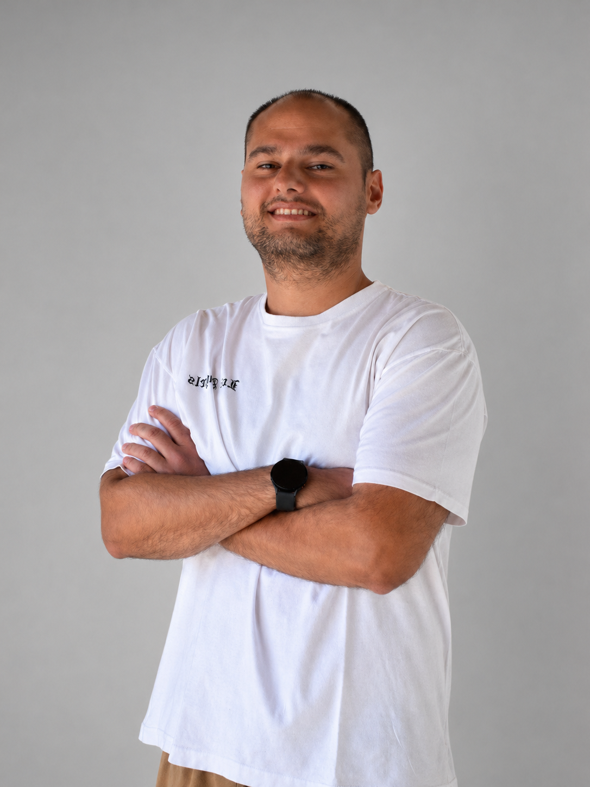
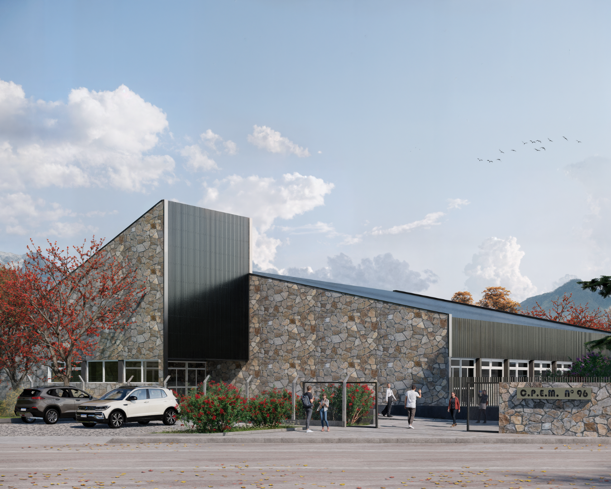
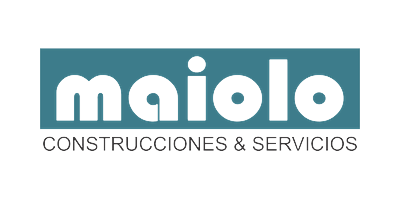

Cálculo estructural
Análisis y cálculo de estructuras para obras diversas. Priorizamos siempre la seguridad, funcionalidad y viabilidad de cada proyecto.
LU.PAS INGENIERÍA
Calculamos lo que otros diseñan.
Estructuras eficientes, seguras y
listas para construir.

Análisis y cálculo de estructuras para obras diversas. Priorizamos siempre la seguridad, funcionalidad y viabilidad de cada proyecto.
Acompañamiento técnico en distintas etapas del proceso, con una mirada ordenada sobre el desarrollo y la ejecución.
Orientación profesional para evaluar alternativas, tomar decisiones y ordenar técnicamente cada proyecto.
Dimensionamiento y verificación de instalaciones eléctricas, garantizando el cumplimiento normativo y la seguridad de cada proyecto.
Nuestro equipo
Dirección técnica y desarrollo de proyectos. Seguimiento de obra con enfoque en criterios estructurales y resolución eficiente.

Planificación, coordinación técnica y acompañamiento en distintas etapas de proyecto, priorizando precisión, orden y soluciones viables.

Apoyo en cálculo estructural, documentación técnica y desarrollo de propuestas para viviendas y obras de escala intermedia.

Cálculo y verificación estructural
San Martín de los Andes, Neuquén
Construye: Maiolo S.A.
.png)
Cálculo estructural
Neuquén, Neuquén
Proyecto: Arq. Eugenia Mancuso
.png)
Cálculo estructural
Neuquén, Argentina
Construye: Maiolo S.A.
.png)
Cálculo estructural
Neuquén, Neuquén
Proyecto: LBL Arquitectura
.png)
Cálculo estructural
Andacollo, Neuquén
Proyecto: Pino Asbey Arquitectos
Estudios, empresas y desarrolladores con los que trabajamos en distintos proyectos.





LU.PAS Ingeniería desarrolla soluciones estructurales con criterio técnico, atención al detalle y una mirada integral sobre cada obra.
Iniciar consulta